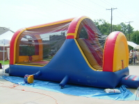

The Sooner Family Fun Zone is a safe, family friendly area where children, parents, and everyone are welcome to come on OU home football game days. Free food, drinks, and activities are provided along with multiple big screen televisions for watching the game.
Some of the activities include:
Everything is FREE
We want to give something back to the community and provide a safe environment for people to spend time in before the game.
You may find out more about The Church of Jesus Christ of Latter-day Saints at http://www.mormon.org.
Here is a Google Map:
For morning/afternoon games the fun zone closes one hour after the conclusion of the game. For night games the fun zone closes at the conclusion of the game.
Parking will not be available at the fun zone. There are many parking lots very nearby run by the university. Please see OU's Parking and Transit website for more information.

The Church of Jesus Christ of Latter-day Saints
848 Elm Ave
Norman, OK 73069
E-mail: contactus@soonerfamilyfunzone.com
| Date | Opponent |
|---|---|
| Sep 4 | Utah State |
| Sep 11 | Florida State |
| Sep 18 | Air Force |
| Oct 16 | Iowa State |
| Oct 30 | Colorado |
| Nov 13 | Texas Tech |